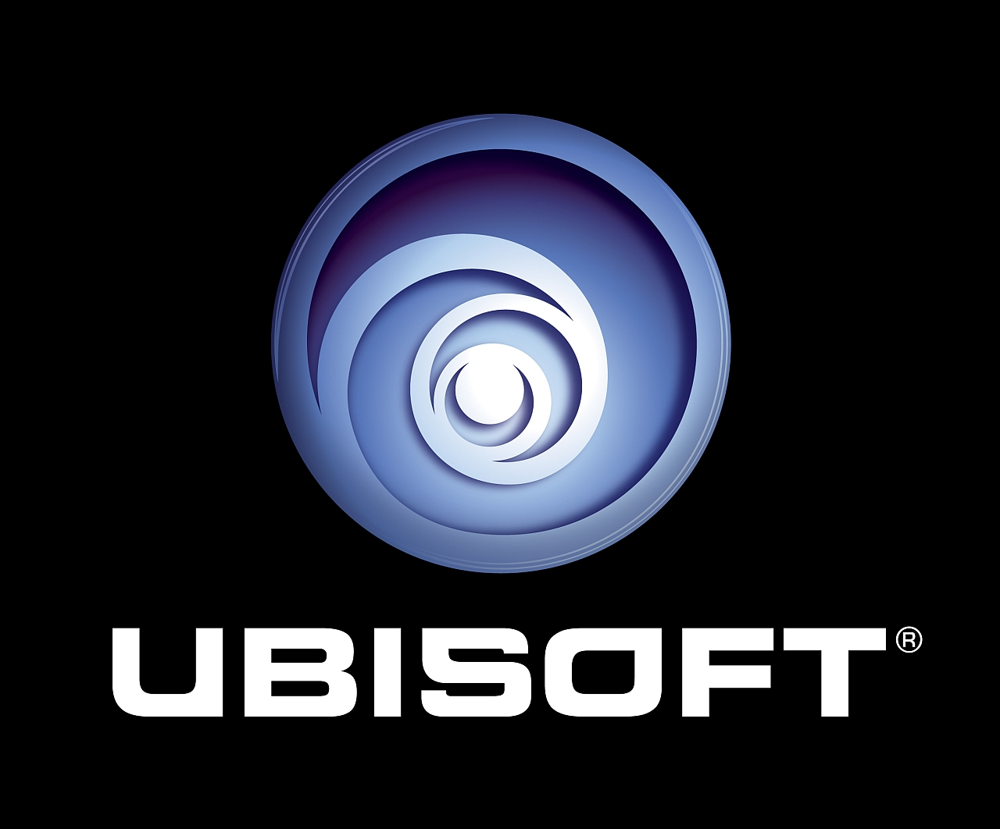

TEMEL BİLGİLER

Ubisoft, Ubisoft Entertainment (ya da eski adıyla Ubi Soft) Fransız video oyun geliştiricisi ve yayımcısıdır. Kısmen(%20) Amerikalı Electronic Arts ile ortaktır, fakat yine de Electronic Arts firmasından bağımsız olarak çalışmaktadır. Ubisoft firması, 28 ülkede stüdyoları ile dünya çapında bir varlığa sahiptir. Aynı zamanda 2008 yılı itibariyle Ubisoft firması Avrupa'nın 3.büyük video oyun ve yapımcı firması seçilmiştir. Ubisoft 2002-2003 yılları arasında 453 milyon, 2003-2004 yılları arasında 508 milyon € kâr elde etmiştir. Ve şirkette birçok çalışan vardır.
Tom Clancy’s The Division ve Far Cry Primal oyunları 2016 yılının ilk çeyreğinde
Amerika Birleşik Devletleri'nde en çok satılan iki oyun olmuştur.
Bu satışlarıyla 2016 yılının başında en başarılı oyun şirketi ünvanını kazanmıştır.
TARİHİ
Guillemot ailesinin 5 kardeşi bilgisayar oyunu yayımcısı olarak 1986 yılında Fransa'da Ubisoft'u kurdu. İlerleyen süreçte Ubisoft gelişti Electronic Arts, Sierra On-Line gibi firmalarla anlaşma yaparak gelişmeye başladı ve Amerika Birleşik Devletleri, ingiltere gibi ülkelerin pazarlarına da girmeye başladı. 1990 yılında Ubisoft Montreal adlı bir stüdyo açtı ve burası Ubisoft'un genel merkezi oldu ve şirket daha sonra burada oyun geliştirme programlarına girişti. Ubisoft halka açık bir şirket, 1996 yılında birçok yerde ofis açarak dünya çapında genişlemeye başladı.
Şubat 2001'de Almanya merkezli Blue Byte Software şirketini satın aldı. Merkezi Montreal, Fransa'da yer almaktadır. 20 ülkede stüdyosu bulunmakla birlikte, Montreal, Kanada; Barselona, İspanya; Şangay, Çin; Kuzey Karolina, ABD; Düsseldorf,Almanya; ve Milan, İtalya'da geliştirme stüdyoları bulunmaktadır.
Gelecekteki Oyunlar sayfası yapım aşamasında olup en kısa sürede hizmete açılacaktır.
Uplay özelliğini bir nevi yapımcı firmanın kendi oyununa öz verdiği Trophy olarak düşünebilirsiniz. Mesala geçen günlerde AC 2 oynarken uplay puanı ile AC1 Altair kostümü almıştım.
Ubisoft şuan için bütün oyunlarına uplay özelliğini getirecek ve tamamen ücretsiz olacak. Ubisoft'un sitesine girin ve üye olun , Ubisoft oyunlarından kazandığınız Uplay puanları ile extra içerikler satın alın , oyununuzun keyfini ikiye katlayın.
Tom Clancy's Rainbow Six Siege oyunu oynamak için Uplay hesabınızın olması gerekiyor. Oyunun CD'sini satın aldığınızda 1.CD ilk olarak bilgisayarınıza Uplay'i kuruyor. Daha sonra yeni hesap oluşturup hesabınızın ilgili bölümüne CD'de bulunan kodu yazmanız gerekiyor. Yazdıktan sonra ekranın sol bölümünde "Download" butonuna tıklıyorsunuz ve oyunu indiriyorsunuz. Belli yerlerde 2. ve 3. CD'yi takmanızı isteyecek. Onları da hallettikten sonra oyunun keyfini çıkarıyorsunuz.
Uplay Nasıl Kullanılır?
Oyuna girmeden önce mesela AC2'de , ana menüde üçgen tuşu ile uplay özelliğine bağlanarak kayıtlı olan e-posta ve şifrenizi girerek oyunun uplay serverine bağlanıyorsunuz. Size sunulan Reward , Action sekmelerinden oyuna ait özel içerik ne varsa oyundan kazanmış olduğunuz uplay coins'i ile satın alma işlemi yapıyorsunuz. Rainbow Six Siege'de de olduğu gibi Uplay'a tıklayıp e-postanızı ve şifrenizi girdikten sonra "Play" butonuna tıklayarak oyunu online oynayabilirsiniz.
UBISOFT'UN YAYINLADIĞI OYUNLAR
-
Assassin's Creed Chronicles (2015) Platformlar: PlayStation 4, XBOX One, PC
-
Assassin's Creed Syndicate (2015) Platformlar: PlayStation 4, XBOX One, PC
-
Assassin's Creed Identity (2015) Platformlar: İOS
-
Assassin's Creed Unity (2014) Platformlar: PS4, Xbox One, PC
-
Watch Dogs (2014) Platformlar: PS4, PS3, Xbox One, Xbox 360, Wii, PSN, Xbox Live
-
Assassin's Creed Liberation HD (2014) Platformlar: PlayStation 3, XBOX 360, PC
-
Assassin's Creed IV black flag (2013) Platformlar: PS4, PS3, XBOX ONE, XBOX 360, Wİİ, PSN, XBOX LIVE
-
Assassin's Creed III (2012) Platformlar : PS3, XBOX 360, Wİİ, PSN, XBOX LIVE
-
Rayman Origins (2011) Platformlar: PS3, XBOX 360, Wİİ, PSN, XBOX LIVE
-
Assassin's Creed: Revelations (2011) Platformlar: PS3, XBOX 360, PC (PS3 ve XBOX 360'tan 1 ay sonra)
-
Assassin's Creed: Brotherhood (2010) Platformlar: PC, PlayStation 3, XBOX 360
-
Assassin's Creed 2 (2010) Platformlar: PlayStation 3, XBOX 360, PC, PSP, DS, IPHONE
-
Assassin's Creed (2008) Platformlar: PlayStation 3, XBOX 360, PC
-
Advance Guardian Heroes (2004) — GBA
-
Alexander (2004) — PC
-
America's Army: Rise of a Soldier — PS2, Xbox
-
Ape Escape 2 (2003) — PS2
- Pumped & Primed (2004) — PS2
-
Asphalt Urban GT (2004) — DS.
-
Baldur's Gate: Dark Alliance (2004) — GBA
-
Batman: Rise of Sin Tzu (2003) — Xbox, PS2
-
Battle Realms (2001) — PC
-
Beyond Good & Evil (2003) — Xbox, PS2, GC, PC
-
Brothers in Arms: Earned in Blood Xbox, PS2, PC
- Brothers In Arms: Road to Hill 30 (2005) — Xbox, PS2, PC
-
Capitalism 2 (2001) — PC
-
Catz 5 (2002) — PC
-
Chessmaster (2003/2004) — Xbox, PS2, PC
- Chessmaster 9000 (2002) — PC, Mac
- Chessmaster 10th Edition (2004) — PC
-
Conflict Zone (2001) — PS2
-
Conquest: Frontier Wars (1999) — PC
-
Crouching Tiger, Hidden Dragon (2003) — Xbox, PS2, GBA
-
CSI: Crime Scene Investigation (2004) — Xbox, PC
- CSI: Dark Motives (2004) — PC
- CSI: Miami (2004) — PC
-
Cold Fear (2005) — PC, Xbox, PS2
-
Dark Messiah of Might and Magic (2006) — (PC)
-
Destroyer Command (2002) — PC
-
Devil May Cry 3 (2006) — PC
-
Dogz 5 (2002) — PC, GBA
-
Dragon Riders: Chronicles of Pern (2001) — DC, PC
-
Enchanted Arms (2006) — Xbox 360
-
The Elder Scrolls III: Morrowind (2002) — PC, Xbox
-
F1 Racing Championship (2001) — PC, PS2, Dreamcast
-
Far Cry (2004) — PC
-
Far Cry 4(2014) — (Xbox 360, Xbox One, PC, PS3, PS4)
- Far Cry Instincts (2005) — Xbox
- Far Cry 2(2008) — (Xbox 360, PS3, PC)
-
Fred (1989) — Atari ST520
-
Heritage of Kings: The Settlers (2005) — PC
-
Heroes of Might and Magic V (2005) — PC
-
Hype: The Time Quest (1999) — PC
-
IL-2 Sturmovik (2001) — PC
- Forgotten Battles Ace Expansion Pack (2004) — PC
-
Indiana Jones and the Last Crusade (1993) — NES
-
Iron Lord (1989) — Atari ST520
-
Jimmy Connors Pro Tennis Tour (1993) — NES
-
Peter Jackson's King Kong — PC, PS2, GCN, Xbox, Xbox 360, PSP, NDS
-
Lock On: Modern Air Combat (2003) — PC
-
Lunar Legend (2001) — GBA
- Lunar: Dragon Song (2005) — DS
-
Monster 4x4: Masters of Metal (2003) — PS2, GC
-
Myst Masterpiece Edition (2000) — PC
- Riven: The Sequel to Myst (1998) — PC
- realMYST (2000) — PC, Mac
- Myst III: Exile (2001) — PC, Mac
- Myst IV: Revelation (2004) — PC, Mac
- Uru: Ages Beyond Myst (2003) — PC
- Myst Uru: The Path of the Shell (2004) — PC
- Myst V: End of Ages (2005) — PC, Mac
-
Night Hunter (1989) — Atari ST520
-
Pacific Fighters (2004) — PC
-
Paradise (2006) — PC
-
POD (Planet of Death) (1996) — PC
-
Pool of Radiance: Ruins of Myth Drannor (2001) — PC
-
Prince of Persia: The Sands of Time (2003) — Xbox, PS2, GC, PC, GBA, (2005 DS)
- Prince of Persia: Warrior Within (2004) — Xbox, PS2, GC, PC
- Prince of Persia: The Two Thrones (2005) — Xbox, PS2, GC, PC
- Prince of Persia: Revelations (2005) (PSP)
- Battles of Prince of Persia — (2006) (NDS)
- Prince Of Persia: Ghost Of The Past (2008) — Xbox 360,PS3,PC
-
Puffy's Saga (1988) — Atari ST520
-
Rayman (1996) — PC, PS1, GBC
- Rayman Gold (1997) — PC
- Rayman Designer (1997) — PC
- Rayman Forever (1998) — PC
- Rayman Collector's Edition (1999) — PC
- Rayman Advance (2001) — GBA
- Rayman 2: The Great Escape (1999/2000) — PC, N64, DC, PS1
- Rayman Revolution (2000/2001) — PS2
- Rayman DS (2005) — DS
- Rayman M (UK Release) (2001) — PC, PS2
- Rayman Arena (2002) — Xbox, PS2, GC, PC
- Rayman 3: Hoodlum Havoc (2003) — Xbox, PS2, GC, PC, GBA, MAC, N-GAGE
- Rayman: Hoodlums' Revenge (2005) — GBA
- Rayman Raving Rabbids (2006) — Wii, GBA, PS2, DS, PC, Xbox 360
-
Rocket: Robot on Wheels (1999) — N64
-
Rocky Legends (2004) — Xbox, PS2
-
Secret of the Silver Earring (2004) — PC
-
Shadowbane: The Rise of Chaos (2003) — PC
-
Silent Hunter III (2005) — PC
-
Sprung (2004) — DS
-
Star Wars Trilogy: Apprentice of the Force (2004) — GBA
-
The Dukes of Hazzard: Return of the General Lee (2004) — Xbox, PS2
-
The Political Machine (2004) — PC
-
The Sum of All Fears (2002/2003) — GC, PC, GBA
-
Ghost Recon series
- Tom Clancy's Ghost Recon (2003) — Xbox, PS2, GC
- Desert Siege (2003) — PC
- Island Thunder (2003) — Xbox, PC
- Jungle Storm (2004) — PS2
- Tom Clancy's Ghost Recon 2 (2004/2005) — Xbox, PS2, GC
- Tom Clancy's Ghost Recon Advanced Warfighter, (2006) — Xbox, Xbox 360, PC, PS2
-
Rainbow Six series
- Tom Clancy's Rainbow Six: Rogue Spear (1999) — PC, Mac, DC, PS1
- Urban Operations — (2000)
- Black Thorn (2001) — PC
- Tom Clancy's Rainbow Six 3: Raven Shield (PC) (2003) — PC
- Athena Sword (2004) — PC
- Iron Wrath (2005) — PC
- Tom Clancy's Rainbow Six 3: Raven Shield (console) (2003) — Xbox, PS2, GC
- Black Arrow (2004) — Xbox
- Tom Clancy's Rainbow Six: Lockdown (2005) — Xbox, PS2, GC, PC
- Tom Clancy's Rainbow Six: Vegas (In development) — Xbox 360,PS2, Xbox, PS3
- Tom Clancy's Rainbow Six: Vegas 2 ( 2008 ) : PC , PlayStation 3
- Tom Clancy’s Rainbow Six: Siege (2015) — Xbox One, PS4, PC
-
Splinter Cell series
- Tom Clancy's Splinter Cell (2003) — Xbox, PS2, GC, PC
- Pandora Tomorrow (2004) — Xbox, PS2, GC, PC
- Chaos Theory (2005) — Xbox, PS2, GC, PC
- Essentials (2006) — PSP only
- Double Agent (2006) — Xbox, PS2, PC, Xbox 360, GC
-
Sub Culture (1997) PC
-
Tonic Trouble (2000) PC, N64
-
Tork: Prehistoric Punk (2005) — Xbox
-
Trollz: Hair Affair! — GBA
-
Twinworld (1989) — Atari ST520
-
Warlords Battlecry II (2002) — PC
-
Warlords IV: Heroes of Etheria (2003) — PC
-
Will Rock (2003) — PC
-
XIII (2003) — Xbox, PS2, GC, PC
-
Yohoho! Puzzle Pirates (2005) — PC
-
World in Conflict (2007)PC,X-box,PSP,PS2,PS3
-
Watch Dogs (2014) - PC, Xbox 360, Xbox One, Playstation 3, Playstation 4, Wii U
-
Maskeli Suvari (2014) - PC
Platform Anahtarı |
|
PC |
|
Xbox |
|
GC |
|
PS2 |
|
PSP |
|
DS |
|
GBA |
|
GBC |
|
GB |
|
PS1 |
|
DC |
|
Mac |
|